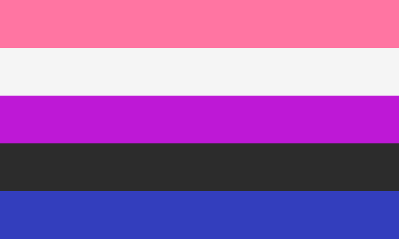

Genderfluid
Definiton
Disclaimer: People can experience identities in different ways. As such, people can identify with a label without exactly matching the definition because identities are fluid.
Genderfluid (also spelled gender-fluid or gender fluid) is a term used by people who experience a fluctuating gender over time. The timeframe for these changes can greatly vary, so they can be mere moments, daily, weekly, monthly, or only occasionally. Genderfluid only refers to a person's gender, so genderfluid people can be any sexuality or romantic orientation. Genderfluid people can use any pronouns they like or no pronouns, since pronouns don't equate gender. Some genderfluid people stick with multiple sets of pronouns, while others change their pronouns depending on how they are currently feeling. Genderfluid people can present in any way they like; they do not have to present in a way that aligns with their current gender to be genderfluid.
Genderfluid people can feel like multiple genders at once, only one gender, or no gender. Some genderfluid people only switch between certain genders, others switch between combinations of multiple genders to having no gender, while others experience a combination of the two. Some genderfluid people also identify as nonbinary and/or transgender, while others only use genderfluid to define their gender identity.
Flag History and Meaning
The genderfluid pride flag was created by JJ Poole (Lostinthoughtspaceandfantasies on Tumblr) in 2012.
The each color of the genderfluid flag has its own meaning:
- Pink: femininity
- White: lack of gender
- Purple: combination of masculinity and femininity, degrees of androgyny
- Black: all other genders
- Blue: masculinity
Some sources swap the white and black stripe meanings. Either way, the genderfluid flag is meant to represent the fluidity of the identity.